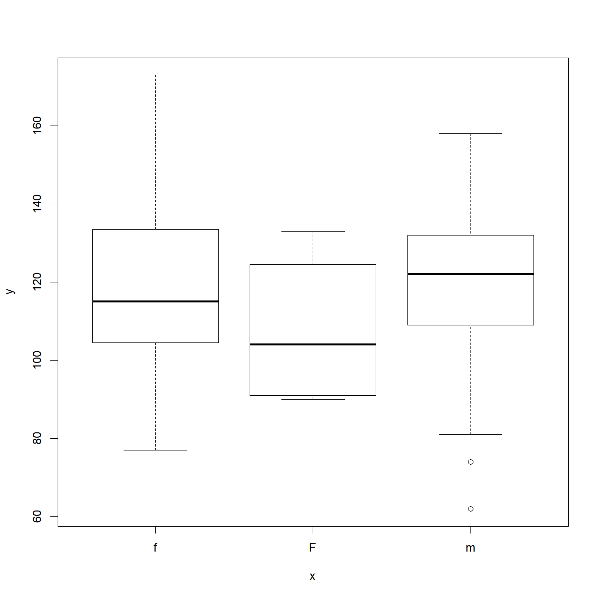
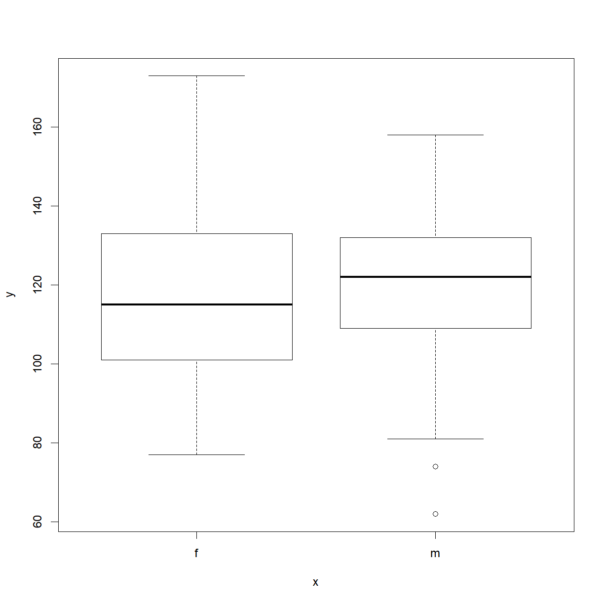

Introduction to R -- Reading, Writing, and Plotting Data
Overview
Class Date: 9/3/2019
Teaching: 80 min
Exercises: 25 minQuestions
How do I read data from a .csv or .txt file into R?
How do I write data to a .csv or .txt file?
How do I calculate simple statistics from my data?
How can I plot my data?
How do I save my plots to a PDF file?
Objectives
Import data from a .csv or .txt file using the
read.table(...),read.csv(...), andread.delim(...)functions.Use
mean,max,min, andsdto calculate simple statistics.Write data to a new .csv or .txt file using the
write.table(...)andwrite.csv(...)functions.Display simple graphs.
Save plot(s) to a PDF file.
Reading data from a tabulated file (.csv, .txt)
In the majority of cases, your data will be stored in some type of external file. The most common way that scientists store data is in Excel spreadsheets. While there are R packages designed to access data from Excel spreadsheets (e.g., gdata, RODBC, XLConnect, xlsx, RExcel), these packages are often difficult and non-intuitive to use. When you start dealing with larger datasets, accessing data from Excel files in R also gets slow. users often find it easier to save their spreadsheets in one or more comma-separated values (CSV or .csv) or text (TXT or .txt) files and then use R’s built in functionality to read and manipulate the data. Both file types are more primitive forms of table/spreadsheet in which data is stored as text with distinct data elements separated by a delimiting character (a comma , for .csv files and usually a tab \t for .txt files).
Thankfully, Excel is capable of opening, editing, and saving both .csv and .txt files, so we can go back and forth between R and Excel when we find it convenient.
In this short lesson, we’ll learn how to read external data from a .csv or .txt file, and write data modified or generatated in R to a new .csv or .txt file. We will also explore the arguments that allow you read and write the data correctly for your needs.
Loading external data into a data frame
Let’s start by loading some sample data and take a look at the first few rows of the contents using the head():
dat <- read.csv(file = 'data/sample.csv')
Open up the same file using a basic text editor (e.g. Notepad in Windows; TextEdit in MacOS). You should see something like this:
“ID”,”Gender”,”Group”,”BloodPressure”,”Age”,”Aneurisms_q1”,”Aneurisms_q2”,”Aneurisms_q3”,”Aneurisms_q4” “Sub001”,”m”,”Control”,132,16,114,140,202,237 “Sub002”,”m”,”Treatment2”,139,17.2,148,209,248,248 “Sub003”,”m”,”Treatment2”,130,19.5,196,251,122,177 “Sub004”,”f”,”Treatment1”,105,15.7,199,140,233,220 “Sub005”,”m”,”Treatment1”,125,19.9,188,120,222,228 “Sub006”,”M”,”Treatment2”,112,14.3,260,266,320,294
A couple of things to notice:
- The frist line contains column headers.
- The
,delimiters tell theread.csv(...)function where the breaks in the data are located; that is, which data to put in which column of the output data frame. - Each new line is also a delimiter that tells
read.csv(...)which data to put in which row in the output data frame - In this case, all strings are contained withing quotation marks
"". This is an optional way to tell the program where character strings start and stop.
On the topic of using quotation marks, open sample-noquotes.csv in your text editor to see the quote-free option:
ID,Gender,Group,BloodPressure,Age,Aneurisms_q1,Aneurisms_q2,Aneurisms_q3,Aneurisms_q4 Sub001,m,Control,132,16,114,140,202,237 Sub002,m,Treatment2,139,17.2,148,209,248,248 Sub003,m,Treatment2,130,19.5,196,251,122,177 Sub004,f,Treatment1,105,15.7,199,140,233,220 Sub005,m,Treatment1,125,19.9,188,120,222,228 Sub006,M,Treatment2,112,14.3,260,266,320,294
And note that the default read.csv(...) treats this file identically:
dat2 <- read.csv(file = 'data/sample-noquotes.csv')
head(dat2)
ID Gender Group BloodPressure Age Aneurisms_q1 Aneurisms_q2
1 Sub001 m Control 132 16.0 114 140
2 Sub002 m Treatment2 139 17.2 148 209
3 Sub003 m Treatment2 130 19.5 196 251
4 Sub004 f Treatment1 105 15.7 199 140
5 Sub005 m Treatment1 125 19.9 188 120
6 Sub006 M Treatment2 112 14.3 260 266
Aneurisms_q3 Aneurisms_q4
1 202 237
2 248 248
3 122 177
4 233 220
5 222 228
6 320 294
Whether to use quotes in your data files is up to you. The default behavior of read.csv(...) is smart enough to figure this out on it’s own. However, the read.csv(...) has an argument called quote that dictates how to interpret quotation marks.
Mis-loading quoted data
What if we force
read.csv("")to ignore the quotes when they are present? Before you run any code, think about what will happen to the data in quotes if we tell R that there are no “quote” characters.dat3 <- read.csv(file = 'data/sample.csv', quote="") head(dat3)Solution
The quotes are now included as part of the character arguments. It also messed up the header formating, apending an “X” to the beginning and surrounding text with “.”ss.
What happens if we don’t assign the output of read.csv(...) to a variable?
read.csv(file = 'data/sample.csv')
As with any other function call, if the output is not explicitly assigned, it will be dumped into the console window.
Changing Delimiters
The default delimiter of the read.csv() function is a comma ,, but you can
use esentially any set of characters as a delimiter. read.csv(...) is actually a special case of a broader function called read.table(...), with the delimiter argument (which is sep, for “separator”) set to c by default. Check out the help file for these functions:
?read.table # note that `?read.csv` brings up the same help document.
Under the Usage section there are multiple functions listed, including read.table(...) and read.csv(...). In the parentheses for each function there is a list of arguments. Since read.table(...) is the parent function, all arguments are listed. Only arguments with different default values (as indicated by the =) are listed for read.csv(...). A default value is the value that each arguement assumes when you do not explicitly enter a value. For example, read.table(...) assumes that a data file has no header (header = FALSE) and no delimiting character (sep = "") while read.csv(...) assumes that a data file does have a header (header = TRUE) and a comma as the delimiting character (sep = ","), unless you specify otherwise.
If your data is stored in a tab-delimited text file, you will need to use read.table(...) a different delimiting character, or another of the associated functions called read.delim(...) which has defaults to a tab-delimited file format. Note that to define a tab as a delimiting character, you have to use \t.
Let’s give it a try using a copy of the sample.csv data saved as a tab-delimited sample.txt file.
Note: From the help file, read.delim(...) defaults to header = TRUE while we have to explicity definit it when using read.table(...). We will talk about what this means in the next section.
# note that read
dat4 <- read.delim(file = 'data/sample.txt')
dat5 <- read.table(file = 'data/sample.txt', header = TRUE)
head(dat4)
ID Gender Group BloodPressure Age Aneurisms_q1 Aneurisms_q2
1 Sub001 m Control 132 16.0 114 140
2 Sub002 m Treatment2 139 17.2 148 209
3 Sub003 m Treatment2 130 19.5 196 251
4 Sub004 f Treatment1 105 15.7 199 140
5 Sub005 m Treatment1 125 19.9 188 120
6 Sub006 M Treatment2 112 14.3 260 266
Aneurisms_q3 Aneurisms_q4
1 202 237
2 248 248
3 122 177
4 233 220
5 222 228
6 320 294
head(dat5)
ID Gender Group BloodPressure Age Aneurisms_q1 Aneurisms_q2
1 Sub001 m Control 132 16.0 114 140
2 Sub002 m Treatment2 139 17.2 148 209
3 Sub003 m Treatment2 130 19.5 196 251
4 Sub004 f Treatment1 105 15.7 199 140
5 Sub005 m Treatment1 125 19.9 188 120
6 Sub006 M Treatment2 112 14.3 260 266
Aneurisms_q3 Aneurisms_q4
1 202 237
2 248 248
3 122 177
4 233 220
5 222 228
6 320 294
Now let’s take a closer look at a couple of useful arguments in read.table(...) family of functions.
The header Argument
The default for read.csv(...) and read.delim(...) is to set the header argument to TRUE. This means that the first row of values in the .csv or .txt is used to define the column names for the data frame. If your data set does not have a header, set the header argument to FALSE.
Mis-loading data with headers
What happens if you forget to put
header = FALSE? The default value isheader = TRUE, which you can check with?read.csvorhelp(read.csv). What do you expect will happen if you leave the default value? Before you run any code, think about what will happen to the first few rows of your data frame, and its overall size. Then run the following code and see if your expectations agree:dat6 <- read.csv(file = 'data/sample.csv', header = FALSE) head(dat6)Solution
The
read.csv(...)function sets the column names as the default values (V1, V2, V3, ...) and treats the first row of thesample.csvfile as the first row of data. Clearly this is not the desired behavior for this data set, but it will be useful if you have a dataset without headers. Note that theVis prepended just a number would not be a valid variable name.
The stringsAsFactors Argument
This is perhaps the most important argument in read.csv(...), particularly if you are working with categorical data. This is because the default behavior of R is to convert character strings into factors, which may make it difficult to do such things as replace values.
For example, let’s look at the car-speeds.csv data set. We find out that the data collector was color blind, and accidentally recorded green cars as being blue. In order to correct the data set, let’s replace ‘Blue’ with ‘Green’ in the $Color column:
# First - load the data and take a look at what information is available
carSpeeds <- read.csv(file = 'data/car-speeds.csv')
head(carSpeeds)
Color Speed State
1 Blue 32 NewMexico
2 Red 45 Arizona
3 Blue 35 Colorado
4 White 34 Arizona
5 Red 25 Arizona
6 Blue 41 Arizona
# Next use indexing to replace all `Blue` entries in the Color column with 'Green'
carSpeeds$Color[carSpeeds$Color == 'Blue'] = 'Green'
Warning in `[<-.factor`(`*tmp*`, carSpeeds$Color == "Blue", value =
structure(c(NA, : invalid factor level, NA generated
What happened? The colors of the cars were loaded as factors by read.csv(...) by default. Since Green was not in the original set of colors, it was not included as a level in the factor.
To see the internal structure, we can use another function, str(). In this case,
the dataframe’s internal structure includes the format of each column, which is what
we are interested in. str() will be reviewed a little more in the lesson
Data Types and Structures.
str(carSpeeds)
'data.frame': 100 obs. of 3 variables:
$ Color: Factor w/ 5 levels " Red","Black",..: NA 1 NA 5 4 NA NA 2 5 4 ...
$ Speed: int 32 45 35 34 25 41 34 29 31 26 ...
$ State: Factor w/ 4 levels "Arizona","Colorado",..: 3 1 2 1 1 1 3 2 1 2 ...
We can see that the $Color and $State columns are factors and $Speed is a numeric column.
One way to solve this problem would be to add the Green level to the Color factor, but there is a simpler way. Let’s reload the dataset using stringsAsFactors = FALSE, and see what happens when we try to replace ‘Blue’ with ‘Green’ in the $Color column:
# First - load the data and take a look at what information is available
carSpeeds <- read.csv(file = 'data/car-speeds.csv', stringsAsFactors = FALSE)
str(carSpeeds)
'data.frame': 100 obs. of 3 variables:
$ Color: chr "Blue" " Red" "Blue" "White" ...
$ Speed: int 32 45 35 34 25 41 34 29 31 26 ...
$ State: chr "NewMexico" "Arizona" "Colorado" "Arizona" ...
# Next use indexing to replace all `Blue` entries in the Color column with 'Green'
carSpeeds$Color[carSpeeds$Color == 'Blue'] = 'Green'
carSpeeds$Color
[1] "Green" " Red" "Green" "White" "Red" "Green" "Green" "Black"
[9] "White" "Red" "Red" "White" "Green" "Green" "Black" "Red"
[17] "Green" "Green" "White" "Green" "Green" "Green" "Red" "Green"
[25] "Red" "Red" "Red" "Red" "White" "Green" "Red" "White"
[33] "Black" "Red" "Black" "Black" "Green" "Red" "Black" "Red"
[41] "Black" "Black" "Red" "Red" "White" "Black" "Green" "Red"
[49] "Red" "Black" "Black" "Red" "White" "Red" "Green" "Green"
[57] "Black" "Green" "White" "Black" "Red" "Green" "Green" "White"
[65] "Black" "Red" "Red" "Black" "Green" "White" "Green" "Red"
[73] "White" "White" "Green" "Green" "Green" "Green" "Green" "White"
[81] "Black" "Green" "White" "Black" "Black" "Red" "Red" "White"
[89] "White" "White" "White" "Red" "Red" "Red" "White" "Black"
[97] "White" "Black" "Black" "White"
That’s better! And we can see how the data now is read as character instead of factor.
Writing tabular data to a file (.csv, .txt)
After altering our cars dataset by replacing ‘Blue’ with ‘Green’ in the $Color column, we now want to save the output. The read.table(...) function family has a corresponding set of write.table(...) functions. These functions have a familiar set of arguments:
?read.table
Here is the basic format for writing a table:
# Export the data. The write.csv() function requires a minimum of two
# arguments, the data to be saved and the name of the output file.
write.csv(carSpeeds, file = 'data/car-speeds-cleaned.csv')
If you open the file, you’ll see that it has header names, because the data had headers within R, but that there are also numbers in the first column.

This extra column can cause problems when trying to open data in some other programs, and in most cases you won’t want to explicity name the rows. This can be easily disabled with a simple argument:
The row.names Argument
This argument allows us to set the names of the rows in the output data file. R’s default for this argument is TRUE, and since it does not know what else to name the rows for the cars data set, it resorts to using row numbers. To turn row numbers off, we can set row.names to FALSE:
write.csv(carSpeeds, file = 'data/car-speeds-cleaned.csv', row.names = FALSE)
Now we see:

Setting Column Names
There is also a
col.namesargument, which can be used to set the column names for a data set without headers. If the data set already has headers (e.g., we used theheaders = TRUEargument when importing the data) then acol.namesargument will be ignored.
The na Argument
There are times when we want to specify certain values for NAs in the data set (e.g., we are going to pass the data to a program that only accepts -9999 as a nodata value). In this case, we want to set the NA value of our output file to the desired value, using the na argument. Let’s see how this works:
# First, replace the speed in the 3rd row with NA, by using an index (square
# brackets to indicate the position of the value we want to replace)
carSpeeds$Speed[3] <- NA
head(carSpeeds)
Color Speed State
1 Green 32 NewMexico
2 Red 45 Arizona
3 Green NA Colorado
4 White 34 Arizona
5 Red 25 Arizona
6 Green 41 Arizona
write.csv(carSpeeds, file = 'data/car-speeds-cleaned.csv', row.names = FALSE)
Now we’ll set NA to -9999 when we write the new .csv file:
# Note - the na argument requires a string input
write.csv(carSpeeds,
file = 'data/car-speeds-cleaned.csv',
row.names = FALSE,
na = '-9999')
And we see:

This can be useful when exporting data from R in a different program that either does not recognize NA or uses a different symbol for missing data.
Manipulating Data
Now that our data are loaded into R, we can start doing things with them. First, let’s ask what type of thing dat is:
class(dat)
[1] "data.frame"
The output tells us that it’s a data frame. As noted in the previous lesson, data frames are the de facto data type in R, and many functions will produce data frames as output.
We can see the shape, or dimensions, of the data frame with the function dim:
dim(dat)
[1] 100 9
This tells us that our data frame, dat, has 100 rows and 9 columns.
Reviewing the basic types of subsetting, if we want to get a single value from the data frame, we can provide an index in square brackets. The first number specifies the row and the second the column:
# first value in dat, row 1, column 1
dat[1, 1]
[1] Sub001
100 Levels: Sub001 Sub002 Sub003 Sub004 Sub005 Sub006 Sub007 ... Sub100
# middle value in dat, row 30, column 6
dat[30, 6]
[1] 103
Or we can select sequential or non-sequential subsets using the : operator or c() function, respectively:
# output the first 4 rows and first 3 columns of dat
dat[1:4, 1:3]
ID Gender Group
1 Sub001 m Control
2 Sub002 m Treatment2
3 Sub003 m Treatment2
4 Sub004 f Treatment1
# output rows 1, 3, and, 5, and columsn 2 and 6
dat[c(1, 3, 5), c(2, 6)]
Gender Aneurisms_q1
1 m 114
3 m 196
5 m 188
If you want to select all rows or all columns, leave that index value empty.
# All columns from row 5
dat[5, ]
ID Gender Group BloodPressure Age Aneurisms_q1 Aneurisms_q2
5 Sub005 m Treatment1 125 19.9 188 120
Aneurisms_q3 Aneurisms_q4
5 222 228
# All rows from column 6-8
dat[, 6:9]
Aneurisms_q1 Aneurisms_q2 Aneurisms_q3 Aneurisms_q4
1 114 140 202 237
2 148 209 248 248
3 196 251 122 177
4 199 140 233 220
5 188 120 222 228
6 260 266 320 294
7 135 98 154 245
8 216 238 279 251
9 117 215 181 272
10 188 144 192 185
11 134 155 247 223
12 152 177 323 245
13 112 220 225 195
14 109 150 177 189
15 146 140 239 223
16 97 172 203 207
17 165 157 200 193
18 158 265 243 187
19 178 109 206 182
20 107 188 167 218
21 174 160 203 183
22 97 110 194 133
23 187 239 281 214
24 188 191 256 265
25 114 199 242 195
26 115 160 158 228
27 128 249 294 315
28 112 230 281 126
29 136 109 105 155
30 103 148 219 228
31 132 151 234 162
32 118 154 260 160
33 166 176 253 233
34 152 105 197 299
35 191 148 166 185
36 152 178 158 170
37 161 270 232 284
38 239 184 317 269
39 132 137 193 206
40 168 255 273 274
41 140 184 239 202
42 166 85 179 196
43 141 160 179 239
44 161 168 212 181
45 103 111 254 126
46 231 240 260 310
47 192 141 180 225
48 178 180 169 183
49 167 123 236 224
50 135 150 208 279
51 150 166 153 204
52 192 80 138 222
53 153 153 236 216
54 205 264 269 207
55 117 194 216 211
56 199 119 183 251
57 182 129 226 218
58 180 196 250 294
59 111 111 244 201
60 101 98 178 116
61 166 167 232 241
62 158 171 237 212
63 189 178 177 238
64 189 101 193 172
65 239 189 297 300
66 185 224 151 182
67 224 112 304 288
68 104 139 211 204
69 222 199 280 196
70 107 98 204 138
71 153 255 218 234
72 118 165 220 227
73 102 184 246 222
74 188 125 191 157
75 180 283 204 298
76 178 214 291 240
77 168 184 184 229
78 118 170 249 249
79 169 114 248 233
80 156 138 218 258
81 232 211 219 246
82 188 108 180 136
83 169 168 180 211
84 241 233 292 182
85 65 207 234 235
86 225 185 195 235
87 104 116 173 221
88 179 158 216 244
89 103 140 209 186
90 112 130 175 191
91 226 170 307 244
92 228 221 316 259
93 209 142 199 184
94 153 104 194 214
95 111 118 173 191
96 148 132 200 194
97 141 196 322 273
98 193 112 123 181
99 130 226 286 281
100 126 157 129 160
Or select columns by name:
# select the BloodPressure data
dat$BloodPressure
[1] 132 139 130 105 125 112 173 108 131 129 126 96 77 158 81 137 147
[18] 130 105 92 111 122 97 118 82 123 126 94 135 108 133 108 122 134
[35] 145 133 90 118 113 115 142 114 139 90 126 109 125 99 122 111 109
[52] 134 113 105 125 123 155 117 116 133 94 106 144 149 108 116 136 98
[69] 148 74 147 116 133 97 132 153 151 121 116 104 111 62 124 124 109
[86] 117 90 158 113 150 115 83 116 141 108 102 90 133 83 122
# select all rows for the Gender and BloodPressure columns
dat[, c("Gender", "BloodPressure")]
Gender BloodPressure
1 m 132
2 m 139
3 m 130
4 f 105
5 m 125
6 M 112
7 f 173
8 m 108
9 m 131
10 f 129
11 m 126
12 f 96
13 f 77
14 m 158
15 m 81
16 m 137
17 f 147
18 m 130
19 m 105
20 F 92
21 f 111
22 m 122
23 f 97
24 f 118
25 m 82
26 M 123
27 M 126
28 f 94
29 m 135
30 f 108
31 f 133
32 m 108
33 m 122
34 m 134
35 m 145
36 f 133
37 f 90
38 m 118
39 M 113
40 m 115
41 f 142
42 m 114
43 m 139
44 m 90
45 f 126
46 f 109
47 M 125
48 M 99
49 m 122
50 m 111
51 m 109
52 f 134
53 f 113
54 f 105
55 m 125
56 f 123
57 m 155
58 m 117
59 m 116
60 f 133
61 f 94
62 f 106
63 f 144
64 M 149
65 f 108
66 m 116
67 f 136
68 f 98
69 M 148
70 m 74
71 m 147
72 m 116
73 F 133
74 m 97
75 m 132
76 f 153
77 M 151
78 M 121
79 M 116
80 f 104
81 m 111
82 M 62
83 M 124
84 m 124
85 m 109
86 f 117
87 f 90
88 f 158
89 m 113
90 m 150
91 f 115
92 m 83
93 F 116
94 f 141
95 m 108
96 m 102
97 F 90
98 m 133
99 M 83
100 M 122
If you leave both index values empty (i.e., dat[,]), you get the entire data frame.
Calculating basic statistics
Now let’s perform some common mathematical operations to learn more about our data. Before we begin, let’s clean up our environment and reload our sample data to reset any unintended changes and be sure that we include header=TRUE and stringsAsFactors=FALSE.
rm(list=ls())
dat <- read.csv(file="data/sample.csv", header=TRUE, stringsAsFactors=FALSE)
This data is the results of an (not real) experiment, looking at the number of aneurisms that formed in the eyes of patients who undertook 3 different treatments.
When analyzing data we often want to look at partial statistics, such as the maximum value per patient or the average value per treatment group. One way to do this is to select the data we want to create a new temporary data frame, and then perform the calculation on this subset:
# select aneurism data for the first subject
sub1 <- dat[1, 6:9]
# max number of aneurisms for subject 1
max(sub1)
[1] 237
We don’t actually need to store the row in a variable of its own. Instead, we can combine the selection and the function call:
# max inflammation for subject 2
max(dat[2, 6:9])
[1] 248
R also has functions for other common calculations, e.g. finding the minimum, mean, median, and standard deviation of the data:
# minimum number of aneurisms in q3
min(dat$Aneurisms_q3)
[1] 105
# mean number of aneurisms in q3
mean(dat$Aneurisms_q3)
[1] 219.85
# median number of aneurisms in q3
median(dat$Aneurisms_q3)
[1] 217
# standard deviation number of aneurisms in q3
sd(dat$Aneurisms_q3)
[1] 48.76958
# total number of observations in q3
length(dat$Aneurisms_q3)
[1] 100
R has a function called summary() that provides a convenient summary of each column:
# Summarize function
summary(dat)
ID Gender Group BloodPressure
Length:100 Length:100 Length:100 Min. : 62.0
Class :character Class :character Class :character 1st Qu.:107.5
Mode :character Mode :character Mode :character Median :117.5
Mean :118.6
3rd Qu.:133.0
Max. :173.0
Age Aneurisms_q1 Aneurisms_q2 Aneurisms_q3
Min. :12.10 Min. : 65.0 Min. : 80.0 Min. :105.0
1st Qu.:14.78 1st Qu.:118.0 1st Qu.:131.5 1st Qu.:182.5
Median :16.65 Median :158.0 Median :162.5 Median :217.0
Mean :16.42 Mean :158.8 Mean :168.0 Mean :219.8
3rd Qu.:18.30 3rd Qu.:188.0 3rd Qu.:196.8 3rd Qu.:248.2
Max. :20.00 Max. :260.0 Max. :283.0 Max. :323.0
Aneurisms_q4
Min. :116.0
1st Qu.:186.8
Median :219.0
Mean :217.9
3rd Qu.:244.2
Max. :315.0
For every column in the data frame, summary() provides a different of summary data depending on the class of that column. For instance, for numeric columns, summary() provides minimun, maximum, mean, median, and quartile values.
What if we need the maximum number of aneurisms across quarters for each patient, or perhaps the average across quarters? As the diagram below shows, we want to perform the operation across a margin of the data frame; that is we want to perform the same function (mean()) on the last 4 columns for every row:

To support this, we can use the apply function.
?apply
apply allows us to repeat a function on all of the rows (MARGIN = 1) or columns (MARGIN = 2) of a data frame. Thus, to obtain the average inflammation of each patient we will need to calculate the mean of all of the rows (MARGIN = 1) of the data frame.
avg_aneurisms_subject <- apply(dat[,6:9], 1, mean)
And to obtain the average number of aneurisms for each quater, mean of all of the columns (MARGIN = 2) of the data frame:
avg_aneurisms_quarter <- apply(dat[,6:9], 2, mean)
Argument Order in Functions
Notice that we did not specify the argument names in
apply(). Looking at the help file, the argument order isX(indicating the input data), thenMARGIN, thenFUN(for function to apply). So long as you enter arguments in the requested order, you do not need to be explicity about which argument you are referring too.apply()just assums that the first argument entered is the value forX, the second is the > value forMARGIN, and the third is the value forFUN. You can mix up the order, but then you have to be explicit about which argument you are defining.For example, this will return an error:
avg_aneurisms_subject <- apply(mean, 1, dat[,6:9])while this will be interpreted identically to the earlier function call:
avg_aneurisms_subject <- apply(FUN = mean, MARGIN = 1, X = dat[,6:9])
Efficient Alternatives
Some common operations have more efficient alternatives. For example, you can calculate the row-wise or column-wise means with
rowMeans()andcolMeans(), respectively. Similarly forrowSums()andcolSums().
Exercises
Subsetting More Data
Suppose you want to determine the maximum number of aneurisms for subject 5 across quarters two to four. To do this you would extract the relevant subset from the data frame and calculate the maximum value. Which of the following lines of R code gives the correct answer?
max(dat[5, ])max(dat[7:9, 5])max(dat[5, 7:9])max(dat[5, 7, 9])Solution
Answer: 3
Explanation: You want to extract the part of the data frame representing data for patient 5 from quarter two (column 7) to quarter 4 (column 9). In this data frame, patient data is organised in rows and the days are represented by the columns. Subscripting in R follows the
[i, j]principle, wherei = rowsandj = columns. Thus, answer 3 is correct since the patient is represented by the value for i (5) and the days are represented by the values in j, which is a subset spanning day 9 to 7.
Subsetting and Re-Assignment
Using the data frame
datfrom above: Let’s pretend there was something wrong with the instrument on the first two quarters for every second patient (subjects 2, 4, 6, etc.), which resulted in the measurements being twice as large as they should be.
- Write a vector containing each affected patient (hint:
?seq)- Create a new data frame in which you halve the first two quarters’ values in only those patients
- Print out the corrected data frame to check that your code has fixed the problem
Solution
whichPatients <- seq(2, dim(dat)[1], 2) # i.e., which rows whichQuarters <- seq(6,7) # i.e., which columns indicates quarters 1 and 2; you could also use c(6,7) or 6:7 dat2 <- dat # make a copy of the original data # check the size of your subset: returns `30 5`, that is 30 [rows=patients] by 5 [columns=quarters] dim(dat2[whichPatients, whichQuarters])[1] 50 2dat2[whichPatients, whichQuarters] <- dat[whichPatients, whichQuarters] / 2 dat2ID Gender Group BloodPressure Age Aneurisms_q1 Aneurisms_q2 1 Sub001 m Control 132 16.0 114.0 140.0 2 Sub002 m Treatment2 139 17.2 74.0 104.5 3 Sub003 m Treatment2 130 19.5 196.0 251.0 4 Sub004 f Treatment1 105 15.7 99.5 70.0 5 Sub005 m Treatment1 125 19.9 188.0 120.0 6 Sub006 M Treatment2 112 14.3 130.0 133.0 7 Sub007 f Control 173 17.7 135.0 98.0 8 Sub008 m Treatment2 108 19.8 108.0 119.0 9 Sub009 m Treatment2 131 19.4 117.0 215.0 10 Sub010 f Control 129 18.8 94.0 72.0 11 Sub011 m Treatment1 126 14.8 134.0 155.0 12 Sub012 f Treatment2 96 15.3 76.0 88.5 13 Sub013 f Control 77 16.5 112.0 220.0 14 Sub014 m Control 158 12.6 54.5 75.0 15 Sub015 m Control 81 14.3 146.0 140.0 16 Sub016 m Control 137 15.9 48.5 86.0 17 Sub017 f Treatment1 147 18.4 165.0 157.0 18 Sub018 m Treatment2 130 18.3 79.0 132.5 19 Sub019 m Treatment1 105 15.4 178.0 109.0 20 Sub020 F Treatment1 92 14.3 53.5 94.0 21 Sub021 f Control 111 12.7 174.0 160.0 22 Sub022 m Treatment1 122 15.4 48.5 55.0 23 Sub023 f Treatment2 97 17.2 187.0 239.0 24 Sub024 f Treatment2 118 17.3 94.0 95.5 25 Sub025 m Treatment1 82 16.7 114.0 199.0 26 Sub026 M Treatment1 123 19.6 57.5 80.0 27 Sub027 M Treatment2 126 15.0 128.0 249.0 28 Sub028 f Treatment1 94 16.1 56.0 115.0 29 Sub029 m Control 135 17.6 136.0 109.0 30 Sub030 f Control 108 18.6 51.5 74.0 31 Sub031 f Treatment1 133 18.3 132.0 151.0 32 Sub032 m Treatment1 108 16.7 59.0 77.0 33 Sub033 m Treatment2 122 12.5 166.0 176.0 34 Sub034 m Treatment1 134 14.3 76.0 52.5 35 Sub035 m Treatment1 145 19.7 191.0 148.0 36 Sub036 f Control 133 17.6 76.0 89.0 37 Sub037 f Treatment2 90 17.0 161.0 270.0 38 Sub038 m Treatment2 118 12.2 119.5 92.0 39 Sub039 M Treatment1 113 15.1 132.0 137.0 40 Sub040 m Treatment2 115 17.7 84.0 127.5 41 Sub041 f Treatment1 142 19.0 140.0 184.0 42 Sub042 m Treatment1 114 14.7 83.0 42.5 43 Sub043 m Control 139 15.2 141.0 160.0 44 Sub044 m Treatment1 90 15.3 80.5 84.0 45 Sub045 f Control 126 12.9 103.0 111.0 46 Sub046 f Treatment2 109 18.4 115.5 120.0 47 Sub047 M Control 125 18.1 192.0 141.0 48 Sub048 M Control 99 15.6 89.0 90.0 49 Sub049 m Control 122 19.5 167.0 123.0 50 Sub050 m Treatment1 111 13.5 67.5 75.0 51 Sub051 m Treatment2 109 13.5 150.0 166.0 52 Sub052 f Treatment1 134 13.7 96.0 40.0 53 Sub053 f Treatment1 113 18.7 153.0 153.0 54 Sub054 f Treatment2 105 12.2 102.5 132.0 55 Sub055 m Treatment2 125 16.9 117.0 194.0 56 Sub056 f Treatment2 123 19.5 99.5 59.5 57 Sub057 m Control 155 12.1 182.0 129.0 58 Sub058 m Treatment2 117 17.0 90.0 98.0 59 Sub059 m Treatment1 116 19.2 111.0 111.0 60 Sub060 f Control 133 14.7 50.5 49.0 61 Sub061 f Control 94 20.0 166.0 167.0 62 Sub062 f Treatment2 106 14.1 79.0 85.5 63 Sub063 f Treatment1 144 14.7 189.0 178.0 64 Sub064 M Treatment1 149 16.6 94.5 50.5 65 Sub065 f Treatment2 108 15.0 239.0 189.0 66 Sub066 m Treatment1 116 15.0 92.5 112.0 67 Sub067 f Treatment2 136 13.8 224.0 112.0 68 Sub068 f Control 98 14.8 52.0 69.5 69 Sub069 M Treatment2 148 19.1 222.0 199.0 70 Sub070 m Control 74 18.9 53.5 49.0 71 Sub071 m Treatment2 147 17.7 153.0 255.0 72 Sub072 m Control 116 17.4 59.0 82.5 73 Sub073 F Treatment1 133 15.5 102.0 184.0 74 Sub074 m Control 97 13.1 94.0 62.5 75 Sub075 m Treatment2 132 12.2 180.0 283.0 76 Sub076 f Treatment2 153 17.0 89.0 107.0 77 Sub077 M Treatment1 151 17.7 168.0 184.0 78 Sub078 M Treatment1 121 19.5 59.0 85.0 79 Sub079 M Treatment1 116 19.5 169.0 114.0 80 Sub080 f Control 104 12.8 78.0 69.0 81 Sub081 m Treatment2 111 17.6 232.0 211.0 82 Sub082 M Treatment1 62 17.7 94.0 54.0 83 Sub083 M Treatment2 124 14.2 169.0 168.0 84 Sub084 m Treatment2 124 19.2 120.5 116.5 85 Sub085 m Treatment2 109 16.0 65.0 207.0 86 Sub086 f Control 117 15.2 112.5 92.5 87 Sub087 f Control 90 17.6 104.0 116.0 88 Sub088 f Treatment1 158 17.6 89.5 79.0 89 Sub089 m Treatment1 113 15.1 103.0 140.0 90 Sub090 m Control 150 17.8 56.0 65.0 91 Sub091 f Treatment2 115 16.2 226.0 170.0 92 Sub092 m Treatment2 83 16.6 114.0 110.5 93 Sub093 F Control 116 19.1 209.0 142.0 94 Sub094 f Treatment1 141 17.2 76.5 52.0 95 Sub095 m Control 108 13.6 111.0 118.0 96 Sub096 m Control 102 14.6 74.0 66.0 97 Sub097 F Treatment2 90 19.6 141.0 196.0 98 Sub098 m Treatment1 133 17.0 96.5 56.0 99 Sub099 M Treatment2 83 16.2 130.0 226.0 100 Sub100 M Treatment1 122 18.4 63.0 78.5 Aneurisms_q3 Aneurisms_q4 1 202 237 2 248 248 3 122 177 4 233 220 5 222 228 6 320 294 7 154 245 8 279 251 9 181 272 10 192 185 11 247 223 12 323 245 13 225 195 14 177 189 15 239 223 16 203 207 17 200 193 18 243 187 19 206 182 20 167 218 21 203 183 22 194 133 23 281 214 24 256 265 25 242 195 26 158 228 27 294 315 28 281 126 29 105 155 30 219 228 31 234 162 32 260 160 33 253 233 34 197 299 35 166 185 36 158 170 37 232 284 38 317 269 39 193 206 40 273 274 41 239 202 42 179 196 43 179 239 44 212 181 45 254 126 46 260 310 47 180 225 48 169 183 49 236 224 50 208 279 51 153 204 52 138 222 53 236 216 54 269 207 55 216 211 56 183 251 57 226 218 58 250 294 59 244 201 60 178 116 61 232 241 62 237 212 63 177 238 64 193 172 65 297 300 66 151 182 67 304 288 68 211 204 69 280 196 70 204 138 71 218 234 72 220 227 73 246 222 74 191 157 75 204 298 76 291 240 77 184 229 78 249 249 79 248 233 80 218 258 81 219 246 82 180 136 83 180 211 84 292 182 85 234 235 86 195 235 87 173 221 88 216 244 89 209 186 90 175 191 91 307 244 92 316 259 93 199 184 94 194 214 95 173 191 96 200 194 97 322 273 98 123 181 99 286 281 100 129 160
Correcting Case in Gender
Take a closer look at the gender break down of our aneurism patient group. You can use the
table()function to give you a count of each category for a categorical vector:table(dat$Gender)f F m M 35 4 46 15What is going on here? It appears that the person entering this data sometimes used
mand sometimesMto indicatemale, and similarlyforFto indicatefemale(or perhaps there were two individuals entering the data in slightly different ways). This is a problem, because R is case-sensitive and treatesmas a different entry fromM.Use logical indexing to correct this problem. So we are all on the same page, change all entries to capitals. Save your corrected file to the data folder under the file name “sample-gendercorrected.csv”.
Solution
# first make a copy of the data (never overwrite your raw data) dat_cor <- dat # correct `f` entries to `F` dat_cor$Gender[dat_cor$Gender == 'f'] = 'F' # correct `m` entries to `M` dat_cor$Gender[dat_cor$Gender == 'm'] = 'M' # check the output using `table()` table(dat_cor$Gender) # save corrected data file write.csv(dat_cor, file="data/sample-gendercorrected.csv", row.names = FALSE)
Using the Apply Function on Patient Data
The apply function can be used to summarize datasets and subsets of data across rows and columns using the MARGIN argument. Suppose you want to calculate the mean number of aneurisms for specific quarters and patients in the patient dataset.
Use a combination of the apply function and indexing to:
- Calculate the mean number of aneurisms for patients 1 to 5 over all four quarters.
- Calculate the mean number of aneurisms for quarters 1 to 3 (across all patients).
- Calculate the mean number of aneurisms for each patient in treatment group 2 day (across all quarters).
Think about the number of rows and columns you would expect as the result before each apply call and check your intuition by applying the mean function.
Solution
# 1. apply(dat[1:5, 6:9], 1, mean) # 2. apply(dat[, 6:8], 2, mean) # 3. apply(dat[dat$Group == "Treatment2", 6:9], 1, mean)
Plotting
The mathematician Richard Hamming once said,
“The purpose of computing is insight, not numbers.”
The best way to develop insight is often to visualize data. Visualization deserves an entire lecture (or course) of its own, but we can explore a few of R’s plotting features.
Let’s take a look at the average number of aneurisms over time. Recall that we already calculated these values above using apply(dat[,6:9], 2, mean) and saved them in the variable avg_aneurisms_quarter.
Plotting the values is done with the function plot().
plot(avg_aneurisms_quarter)

Above, we gave the function plot() a vector of numbers corresponding to the average inflammation per day across all patients.
plot created a scatter plot where the y-axis is the average inflammation level and the x-axis is the order, or index, of the values in the vector, which in this case correspond to the 40 days of treatment.
The result is roughly a linear rise and fall, which is suspicious: based on other studies, we expect a sharper rise and slower fall.
Let’s have a look at two other statistics: the maximum and minimum inflammation per day.
max_day_inflammation <- apply(dat, 2, max)
plot(max_day_inflammation)
Warning in xy.coords(x, y, xlabel, ylabel, log): NAs introduced by coercion

min_day_inflammation <- apply(dat, 2, min)
plot(min_day_inflammation)
Warning in xy.coords(x, y, xlabel, ylabel, log): NAs introduced by coercion

The maximum value rises and falls perfectly smoothly, while the minimum seems to be a step function. Neither result seems particularly likely, so either there’s a mistake in our calculations or something is wrong with our data.
Plotting Data
Create a plot showing the standard deviation of the inflammation data for each day across all patients.
Solution
sd_day_inflammation <- apply(dat, 2, sd) plot(sd_day_inflammation)
Saving Plots to a File
So far, we have built a function analyze to plot summary statistics of the inflammation data:
analyze <- function(filename) {
# Plots the average, min, and max inflammation over time.
# Input is character string of a csv file.
dat <- read.csv(file = filename, header = FALSE)
avg_day_inflammation <- apply(dat, 2, mean)
plot(avg_day_inflammation)
max_day_inflammation <- apply(dat, 2, max)
plot(max_day_inflammation)
min_day_inflammation <- apply(dat, 2, min)
plot(min_day_inflammation)
}
And also built the function analyze_all to automate the processing of each data file:
analyze_all <- function(folder = "data", pattern) {
# Runs the function analyze for each file in the given folder
# that contains the given pattern.
filenames <- list.files(path = folder, pattern = pattern, full.names = TRUE)
for (f in filenames) {
analyze(f)
}
}
While these are useful in an interactive R session, what if we want to send our results to our collaborators?
Since we currently have 12 data sets, running analyze_all creates 36 plots.
Saving each of these individually would be tedious and error-prone.
And in the likely situation that we want to change how the data is processed or the look of the plots, we would have to once again save all 36 before sharing the updated results with our collaborators.
Here’s how we can save all three plots of the first inflammation data set in a pdf file:
pdf("inflammation-01.pdf")
analyze("data/inflammation-01.csv")
dev.off()
The function pdf redirects all the plots generated by R into a pdf file, which in this case we have named “inflammation-01.pdf”.
After we are done generating the plots to be saved in the pdf file, we stop R from redirecting plots with the function dev.off.
Overwriting Plots
If you run
dev.off, you will save plots to the most recently opened file. However, you won’t be able to open the previous pdf files because the connections were not closed. In order to get out of this situation, you’ll need to rundev.offuntil all the pdf connections are closed. You can check your current status using the functiondev.cur. If it says “pdf”, all your plots are being saved in the last pdf specified. If it says “null device” or “RStudioGD”, the plots will be visualized normally.
We can update the analyze function so that it always saves the plots in a pdf.
But that would make it more difficult to interactively test out new changes.
It would be ideal if analyze would either save or not save the plots based on its input.
Saving Automatically Generated Figures
Now that we know how to have R make decisions based on input values,
let’s update analyze:
analyze <- function(filename, output = NULL) {
# Plots the average, min, and max inflammation over time.
# Input:
# filename: character string of a csv file
# output: character string of pdf file for saving
if (!is.null(output)) {
pdf(output)
}
dat <- read.csv(file = filename, header = FALSE)
avg_day_inflammation <- apply(dat, 2, mean)
plot(avg_day_inflammation)
max_day_inflammation <- apply(dat, 2, max)
plot(max_day_inflammation)
min_day_inflammation <- apply(dat, 2, min)
plot(min_day_inflammation)
if (!is.null(output)) {
dev.off()
}
}
We added an argument, output, that by default is set to NULL.
An if statement at the beginning checks the argument output to decide whether or not to save the plots to a pdf.
Let’s break it down.
The function is.null returns TRUE if a variable is NULL and FALSE otherwise.
The exclamation mark, !, stands for “not”.
Therefore the line in the if block is only executed if output is “not null”.
output <- NULL
is.null(output)
[1] TRUE
!is.null(output)
[1] FALSE
Now we can use analyze interactively, as before,
analyze("data/inflammation-01.csv")


but also use it to save plots,
analyze("data/inflammation-01.csv", output = "inflammation-01.pdf")
png
2
Before going further, we will create a directory results for saving our plots.
It is good practice in data analysis projects to save all output to a directory separate from the data and analysis code.
You can create this directory using the shell command mkdir, or the R function dir.create()
dir.create("results")
Warning in dir.create("results"): 'results' already exists
Now run analyze and save the plot in the results directory,
analyze("data/inflammation-01.csv", output = "results/inflammation-01.pdf")
png
2
This now works well when we want to process one data file at a time, but how can we specify the output file in analyze_all?
We need to do two things:
- Substitute the filename ending “csv” with “pdf”.
- Save the plot to the
resultsdirectory.
To change the extension to “pdf”, we will use the function sub,
f <- "inflammation-01.csv"
sub("csv", "pdf", f)
[1] "inflammation-01.pdf"
To add the “results” directory to the filename use the function file.path,
file.path("results", sub("csv", "pdf", f))
[1] "results/inflammation-01.pdf"
Now let’s update analyze_all:
analyze_all <- function(pattern) {
# Directory name containing the data
data_dir <- "data"
# Directory name for results
results_dir <- "results"
# Runs the function analyze for each file in the current working directory
# that contains the given pattern.
filenames <- list.files(path = data_dir, pattern = pattern)
for (f in filenames) {
pdf_name <- file.path(results_dir, sub("csv", "pdf", f))
analyze(file.path(data_dir, f), output = pdf_name)
}
}
Now we can save all of the results with just one line of code:
analyze_all("inflammation.*csv")
Now if we need to make any changes to our analysis, we can edit the analyze function and quickly regenerate all the figures with analyze_all.
Changing the Behavior of the Plot Command
One of your collaborators asks if you can recreate the figures with lines instead of points. Find the relevant argument to
plotby reading the documentation (?plot), updateanalyze, and then recreate all the figures withanalyze_all.Solution
analyze <- function(filename, output = NULL) { # Plots the average, min, and max inflammation over time. # Input: # filename: character string of a csv file # output: character string of pdf file for saving if (!is.null(output)) { pdf(output) } dat <- read.csv(file = filename, header = FALSE) avg_day_inflammation <- apply(dat, 2, mean) plot(avg_day_inflammation, type = "l") max_day_inflammation <- apply(dat, 2, max) plot(max_day_inflammation, type = "l") min_day_inflammation <- apply(dat, 2, min) plot(min_day_inflammation, type = "l") if (!is.null(output)) { dev.off() } }
Using Factors
Lets load our example data to see the use of factors:
dat <- read.csv(file = 'data/sample.csv', stringsAsFactors = TRUE)
Default Behavior
stringsAsFactors = TRUEis the default behavior for R. We could leave this argument out. It is included here for clarity.
str(dat)
'data.frame': 100 obs. of 9 variables:
$ ID : Factor w/ 100 levels "Sub001","Sub002",..: 1 2 3 4 5 6 7 8 9 10 ...
$ Gender : Factor w/ 4 levels "f","F","m","M": 3 3 3 1 3 4 1 3 3 1 ...
$ Group : Factor w/ 3 levels "Control","Treatment1",..: 1 3 3 2 2 3 1 3 3 1 ...
$ BloodPressure: int 132 139 130 105 125 112 173 108 131 129 ...
$ Age : num 16 17.2 19.5 15.7 19.9 14.3 17.7 19.8 19.4 18.8 ...
$ Aneurisms_q1 : int 114 148 196 199 188 260 135 216 117 188 ...
$ Aneurisms_q2 : int 140 209 251 140 120 266 98 238 215 144 ...
$ Aneurisms_q3 : int 202 248 122 233 222 320 154 279 181 192 ...
$ Aneurisms_q4 : int 237 248 177 220 228 294 245 251 272 185 ...
Notice the first 3 columns have been converted to factors. These values were text in the data file so R automatically interpreted them as categorical variables.
summary(dat)
ID Gender Group BloodPressure Age
Sub001 : 1 f:35 Control :30 Min. : 62.0 Min. :12.10
Sub002 : 1 F: 4 Treatment1:35 1st Qu.:107.5 1st Qu.:14.78
Sub003 : 1 m:46 Treatment2:35 Median :117.5 Median :16.65
Sub004 : 1 M:15 Mean :118.6 Mean :16.42
Sub005 : 1 3rd Qu.:133.0 3rd Qu.:18.30
Sub006 : 1 Max. :173.0 Max. :20.00
(Other):94
Aneurisms_q1 Aneurisms_q2 Aneurisms_q3 Aneurisms_q4
Min. : 65.0 Min. : 80.0 Min. :105.0 Min. :116.0
1st Qu.:118.0 1st Qu.:131.5 1st Qu.:182.5 1st Qu.:186.8
Median :158.0 Median :162.5 Median :217.0 Median :219.0
Mean :158.8 Mean :168.0 Mean :219.8 Mean :217.9
3rd Qu.:188.0 3rd Qu.:196.8 3rd Qu.:248.2 3rd Qu.:244.2
Max. :260.0 Max. :283.0 Max. :323.0 Max. :315.0
Notice the summary() function handles factors differently to numbers (and strings), the occurrence counts for each value is often more useful information.
The
summary()FunctionThe
summary()function is a great way of spotting errors in your data (look at the dat$Gender column). It’s also a great way for spotting missing data.
Reordering Factors
The function
table()tabulates observations and can be used to create bar plots quickly. For instance:table(dat$Group)Control Treatment1 Treatment2 30 35 35barplot(table(dat$Group))
Use the
factor()command to modify the column dat$Group so that the control group is plotted last.Solution
dat$Group <- factor(dat$Group, levels = c("Treatment1", "Treatment2", "Control")) barplot(table(dat$Group))

Removing Levels from a Factor
Some of the Gender values in our dataset have been coded incorrectly. Let’s remove levels from this factor.
barplot(table(dat$Gender))

Values should have been recorded as lowercase ‘m’ and ‘f’. We should correct this.
dat$Gender[dat$Gender == 'M'] <- 'm'
Updating Factors
plot(x = dat$Gender, y = dat$BloodPressure)
Why does this plot show 4 levels?
Hint how many levels does dat$Gender have?
Solution
dat$Genderhas 4 levels, so the plot shows 4 levels.

We need to tell R that “M” is no longer a valid value for this column.
We use the droplevels() function to remove extra levels.
dat$Gender <- droplevels(dat$Gender)
plot(x = dat$Gender, y = dat$BloodPressure)

Adjusting Factor Levels
Adjusting the
levels()of a factor provides a useful shortcut for reassigning values in this case.levels(dat$Gender)[2] <- 'f' plot(x = dat$Gender, y = dat$BloodPressure)
Key Points
Import data from a .csv or .txt file using the
read.table(...),read.csv(...), andread.delim(...)functions.Understand some of the key arguments available for importing the data properly, including
header,stringsAsFactors,as.is, andstrip.white.Write data to a new .csv file using the
write.table(...)andwrite.csv(...)functions.Understand some of the key arguments available for exporting the data properly, such as
row.names,col.names,quote, andna.strings.Use
applyto calculate statistics across the rows or columns of a data frame.Use
plotto create simple visualizations.Display simple graphs.
Save a plot in a pdf file using
pdf(...)and stop writing to the pdf file withdev.off().